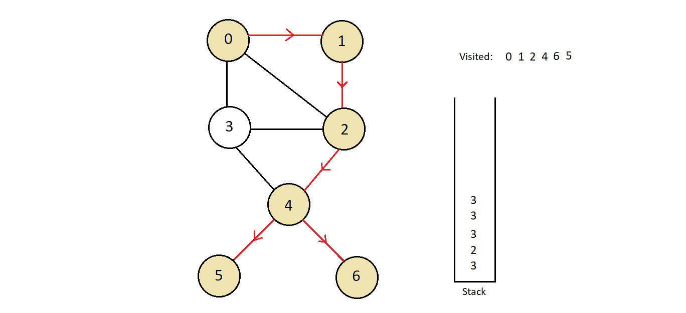

Depth First Search
What is Depth First Search
- In Depth First Search, we start with a node and start exploring its connected nodes, keeping on suspending the exploration of previous wertices.
- And those suspended nodes are explored once we finish exploring the node below. And this way we explore all the nodes of the graph
- What we are doing differently from BFS
- In BFS, we explore all the nodes connected to a node, then explore the nodes we visited in a horizontal manner.
- While in DFS, we start with the first connected node, and similarly go deep, so this loos like visiting the nodes vertically.
DFS Procedure
- The procedure we follow to accomplish the depth-first search traversal of a graph is :
- Define a stack which would hold the nodes we'll be suspending to explore one by one
- Choose any node as the source node and push it into the top of the stack we created.
- We would maintain another array holding the status of whether a node is already visited or not
- TAke the top item of stack and add it to the visited list.
- Create a list of nodes directly connected to the vertex we visited. Push the ones which are still not visited into the stack.
- Repeat steps 2 and 3 until the stack is not empty.
- Define a stack which would hold the nodes we'll be suspending to explore one by one
- To understand the procedure of the depth first search, consider the graph illustrated below.

- Considering the fact that we could begin traversing with any source node, we'll start with 0 only. So, following step 1, we would push this node into the stack and begin our Depth First search traversal.
-
The next step says, pop the top element from the stack which is node 0 here, and mark it
visited. Then, we’ll start visiting all the nodes connected to node 0 which are not visited
already, but before that, we are asked to push them all into the stack, and the order in which
you push doesn't matter at all. Therefore, we will push nodes 3, 2, and 1 into the stack.
- Repeating the steps above, we’ll now pop the top element from the stack which is node 1, and
mark it visited. Only nodes connected to node 1 were nodes 0 and 2, and since the only unvisited
one is node 2. It’s important to observe here, that although node 2 is in the stack, it is not
visited. So, we’ll push it into the stack again.
- Next, we have node 2 at the top of the stack. We’ll mark node 2 visited and unvisited nodes
connected to node 2 are nodes 3 and 4, regardless of the fact that 3 is already there in the
stack. So, we’ll just push nodes 3 and 4 into the stack.
-
Node 4 is the next we have on the top. So, just mark it as visited. Since, all nodes 3, 5, and
6, except node 2, which are directly connected to it are not visited, we’ll push them into the
stack.
- Next, we have node 6 on the top of the stack. Pop it and mark it visited. Since there are no
nodes that are directed connected to node 6 and unvisited, we’ll continue further without doing
anything.
- Next, we pop node 5 out of the stack and mark it visited. And since there is no unvisited node
connected to it, we continue.
 - Node 3 comes next to be visited, being on the top in the stack. Mark node 3 visited and again
there are no nodes left unvisited and connected to node 3. So, we just continue popping out
elements from the stack.
- Now, if you could observe, there are no nodes left to be visited. Although there are elements in
the stack to be explored. So, we just pop them one by one and ignore finding them already
visited. And this gets our stack emptied and every node traversed in Depth First Search manner,
ultimately.
- And the order in which we marked our nodes visited is the Depth First Search traversal order. Here, it is 0, 1, 2, 4, 6, 5, 3. So basically, the visited array maintains whether the node itself is visited or not, and the stack maintains nodes whose exploration got suspended earlier. This was the difference.